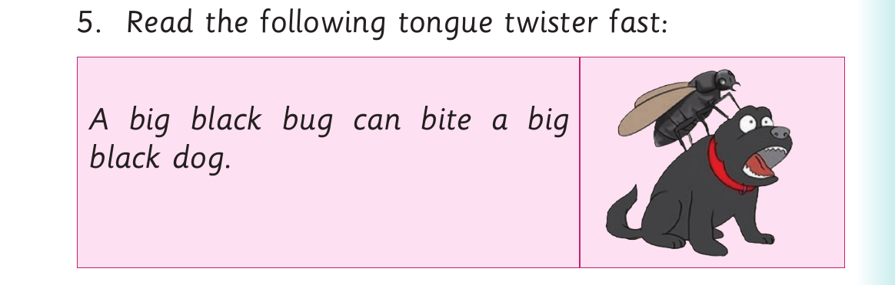
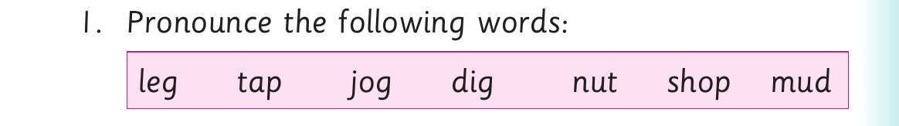
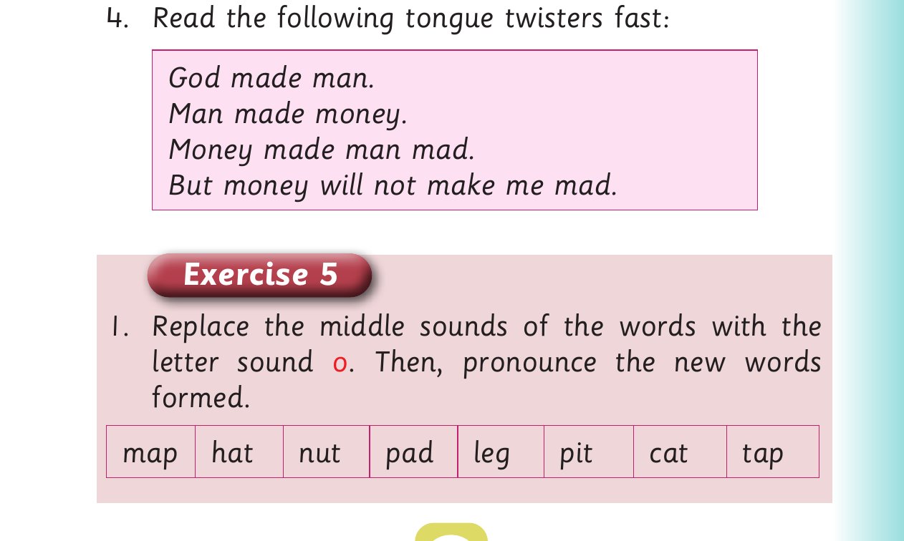

Replacing middle sounds - Activity 3 and Exercise 5
(h) A jet must jut on one side.

For Replacing middle sounds - Activity 3 and Exercise 5, panel 1 of 3 presents the source activity with these printed labels and instructions: 5. Read the following tongue twister fast: A big black bug can bite a big black dog.
5. Read the following tongue twister fast:
A big black bug can bite a big
black dog.
Activity 3

For Replacing middle sounds - Activity 3 and Exercise 5, panel 2 of 3 presents the source activity with these printed labels and instructions: 1. Pronounce the following words: leg tap jog dig nut shop mud
1. Pronounce the following words:
leg tap jog dig nut shop mud
2. Replace the vowel sound of the words in (1).
3. Pronounce the new words you have formed in (2).

For Replacing middle sounds - Activity 3 and Exercise 5, panel 3 of 3 presents the source activity with these printed labels and instructions: 4. Read the following tongue twisters fast: God made man. Man made money. Money made man mad. But money will not make me mad. Exercise 5 1. Replace the middle sounds of the words with the letter sound o . Then, pronounce the new words formed. map hat nut pad leg pit cat tap
4. Read the following tongue twisters fast:
God made man.
Man made money.
Money made man mad.
But money will not make me mad.
Exercise 5
1. Replace the middle sounds of the words with the
letter sound o . Then, pronounce the new words
formed.
map hat nut pad leg pit cat tap